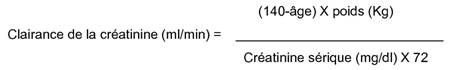

RÉSUMÉ DES CARACTÉRISTIQUES DU PRODUIT
ANSM - Mis à jour le : 15/04/2013
ZOFENIL 15 mg, comprimé pelliculé
2. COMPOSITION QUALITATIVE ET QUANTITATIVE
Zofénopril calcium .......................................................................................................................... 15,00 mg
Quantité correspondant à zofénopril ................................................................................................ 14,30 mg
Pour un comprimé pelliculé.
Excipient: contient du lactose monohydraté (voir rubriques 4.4 et 6.1).
Pour la liste complète des excipients, voir rubrique 6.1.
Comprimé pelliculé.
Comprimé blanc, oblong avec une barre de confort.
4.1. Indications thérapeutiques
Hypertension
ZOFENIL est indiqué dans le traitement de l'hypertension artérielle légère à modérée.
Infarctus du myocarde en phase aiguë
ZOFENIL est indiqué dans le traitement instauré au cours des 24 premières heures d'un infarctus du myocarde en phase aiguë, avec ou sans signes ou symptômes d'insuffisance cardiaque, chez les patients hémodynamiquement stables n'ayant pas reçu de traitement thrombolytique.
4.2. Posologie et mode d'administration
ZOFENIL peut être pris avant, pendant ou après les repas.
La posologie doit être ajustée selon la réponse du patient au traitement.
Hypertension
L'adaptation posologique est fonction de la valeur de la pression artérielle mesurée juste avant l'administration de la dose suivante. L'augmentation de la dose doit se faire par paliers de 4 semaines.
Patients sans déplétion hydrosodée:
Le traitement doit être débuté avec une posologie de 15 mg par jour en 1 prise qui peut être augmentée jusqu'à l'obtention d'un contrôle optimal de la pression artérielle.
La posologie usuelle est de 30 mg par jour.
La dose maximale est de 60 mg par jour en une ou deux prises.
En cas de réponse insuffisante, d'autres agents antihypertenseurs comme les diurétiques peuvent être ajoutés.
Patients susceptibles d'avoir une déplétion hydrosodée:
La première administration peut entraîner une hypotension chez les patients à haut risque (voir rubrique 4.4). La mise en route du traitement par les inhibiteurs de l'enzyme de conversion (IEC) nécessite une correction des déplétions en sel et/ou en eau, un arrêt du traitement par les diurétiques 2 à 3 jours avant l'instauration du traitement par les IEC et une dose initiale de 15 mg par jour. Si cela n'est pas possible, une dose initiale de 7,5 mg sera administrée.
Les patients présentant un risque aigu d'hypotension sévère doivent être suivis, de préférence à l'hôpital, aussi longtemps que l'effet maximal est attendu après l'administration de la 1ère dose et à chaque fois que la posologie de l'IEC et/ou des diurétiques est augmentée. Cela s'applique aussi aux patients avec angor ou maladie cérébrovasculaire, chez qui une hypotension excessive peut entraîner un infarctus du myocarde ou un accident vasculaire cérébral.
Patients avec insuffisance rénale et dialyse:
Chez les patients hypertendus avec une insuffisance rénale légère (clairance de la créatinine > 45 ml/min), la même posologie peut être employée que pour les patients ayant une fonction rénale normale. Chez les patients ayant une insuffisance rénale modérée à sévère (clairance de la créatinine < 45 ml/min), on administrera la moitié de la dose thérapeutique du ZOFENIL; le schéma posologique à raison d'une prise par jour ne nécessite pas de modification.
La dose initiale et le schéma posologique de ZOFENIL chez les patients hypertendus sous dialyse doit être le quart de la dose administrée par rapport aux patients ayant une fonction rénale normale.
De récentes observations cliniques ont montré une incidence élevée de réactions anaphylactoïdes chez les patients recevant des IEC durant une hémodialyse utilisant des membranes de haut flux ou lors d'aphérèses des lipoprotéines de basse densité (LDL) (voir rubrique 4.4).
Posologie chez les sujets âgés:
Chez les sujets âgés avec une clairance de la créatinine normale, aucun ajustement n'est nécessaire.
Chez les sujets âgés avec une clairance de la créatinine réduite (moins de 45 ml/min), la moitié de la dose quotidienne est recommandée.
La clairance de la créatinine peut être estimée à partir de la créatinine sérique selon la formule suivante:

Cette méthode de calcul est valable pour les sujets de sexe masculin. Elle doit être corrigée pour les femmes en multipliant le résultat par 0,85.
Posologie en cas d'insuffisance hépatique:
Chez les patients hypertendus avec une insuffisance hépatique légère à modérée, la dose initiale de ZOFENIL est la moitié de la dose administrée aux patients ayant une fonction hépatique normale.
Chez les patients hypertendus avec une insuffisance hépatique sévère, ZOFENIL est contre-indiqué.
Enfants:
La tolérance et l'efficacité de ZOFENIL chez l'enfant n'ont pas été établies. Par conséquent, il ne doit pas être utilisé chez l'enfant.
Infarctus du myocarde en phase aiguë
Le traitement par ZOFENIL devra débuté dans les 24 premières heures après le début des symptômes de l'infarctus du myocarde et être poursuivi pendant 6 semaines.
La posologie devra être la suivante:
1er et 2ème jours: 7,5 mg toutes les 12 heures
3ème et 4ème jours: 15 mg toutes les 12 heures
Du 5ème jour jusqu'à la fin du traitement: 30 mg toutes les 12 heures.
En cas de pression artérielle systolique inférieure ou égale à 120 mm Hg au début du traitement ou dans les 3 jours suivant l'infarctus, la posologie journalière ne devra pas être augmentée. En cas de survenue d'une hypotension artérielle (pression artérielle systolique inférieure ou égale à 100 mm Hg), le traitement peut être continué avec la posologie précédemment tolérée. En cas de survenue d'une hypotension sévère (pression artérielle systolique inférieure à 90 mm Hg sur deux mesures consécutives éloignées d'au moins une heure) le traitement devra être interrompu.
Après 6 semaines de traitement, les patients devront être ré-évalués et le traitement devra être interrompu chez les patients ne présentant pas de signes d'insuffisance ventriculaire gauche ou d'insuffisance cardiaque. Si ces signes sont présents, le traitement devra être poursuivi à long terme.
Les patients devront aussi recevoir, de façon appropriée, les traitements standards tels que les dérivés nitrés, l'aspirine ou les β-bloquants.
Posologie chez le sujet âgé:
ZOFENIL doit être utilisé avec précaution chez les patients de plus de 75 ans.
Posologie chez les patients ayant un dysfonctionnement rénal ou les patients dialysés:
L'efficacité et la tolérance de ZOFENIL au cours de l'infarctus du myocarde n'ont pas été établies chez les patients ayant un dysfonctionnement rénal ou qui sont dialysés. C'est pourquoi ZOFENIL ne doit pas être utilisé chez ces patients.
Posologie chez les patients ayant un dysfonctionnement hépatique:
L'efficacité et la tolérance du ZOFENIL au cours de l'infarctus du myocarde n'ont pas été établies chez les patients ayant une insuffisance hépatique. C'est pourquoi ZOFENIL ne doit pas être utilisé chez ces patients.
· Hypersensibilité au zofénopril ou à tout autre IEC ou à l'un des excipients.
· Antécédents d'angio-œdème (œdème de Quincke) lié à la prise d'un IEC.
· Angio-œdème héréditaire/idiopathique.
· Insuffisance hépatique sévère.
· Deuxième et troisième trimestre de la grossesse (voir rubriques 4.4 et 4.6).
· Femme en période d'activité génitale sans contraception efficace;
· Sténose bilatérale de l'artère rénale ou sténose unilatérale dans le cadre d'un rein unique.
4.4. Mises en garde spéciales et précautions d'emploi
Comme les autres IEC, ZOFENIL peut provoquer une chute importante de la pression artérielle, particulièrement lors de la première administration, même si une hypotension symptomatique est rarement observée chez les patients ayant une hypertension non compliquée.
Cela peut davantage se produire chez les patients ayant une déplétion volumique et électrolytique suite à un traitement diurétique, un régime sans sel, une dialyse, une diarrhée ou des vomissements, ou qui présentent une hypertension rénine-dépendante sévère (voir rubriques 4.5 et 4.8).
Chez les patients ayant une insuffisance cardiaque, avec ou sans insuffisance rénale associée, une hypotension symptomatique a été observée. Cela peut davantage se produire chez ces patients avec des stades plus sévères d'insuffisance cardiaque, se refletant par l'utilisation de doses élevées de diurétiques de l'anse, une hyponatrémie ou une insuffisance rénale fonctionnelle. Chez les patients à risque élevé d'hypotension symptomatique, le traitement devra démarrer sous surveillance médicale de préférence à l'hôpital avec des doses faibles et une adaptation posologique prudente.
Si possible, le traitement diurétique sera interrompu temporairement quand le traitement par ZOFENIL est instauré. De telles considérations s'appliquent aussi aux patients avec angine de poitrine ou pathologies cérébrovasculaires chez qui une chute de pression artérielle excessive pourrait générer un infarctus du myocarde ou un accident cérébrovasculaire.
Si une hypotension se produit, le patient doit être placé en position couchée. La compensation volumique par voie intraveineuse avec un soluté isotonique de chlorure de sodium peut être nécessaire. L'apparition d'une hypotension après la dose initiale ne doit pas exclure ultérieurement une adaptation posologique prudente.
Chez certains patients insuffisants cardiaques ayant une pression artérielle normale ou basse, une diminution supplémentaire de la pression artérielle systémique peut se produire avec ZOFENIL. Cet effet est attendu et ne justifie normalement pas l'arrêt du traitement. Si l'hypotension devient symptomatique, une diminution de la dose ou l'arrêt du traitement par ZOFENIL peut s'avérer nécessaire.
Hypotension dans l'infarctus aigu du myocarde:
Le traitement par ZOFENIL ne doit pas être administré chez les patients présentant un infarctus aigu du myocarde s'il y a un risque de détérioration hémodynamique sévère (pression artérielle systolique inférieure ou égale à 100 mm Hg ou choc cardiogénique) après traitement par vasodilatateur. Le traitement par ZOFENIL chez les patients présentant un infarctus du myocarde en phase aiguë peut contribuer à une hypotension sévère. En cas d'hypotension persistante (pression artérielle systolique inférieure à 90 mm Hg pendant plus d'une heure), ZOFENIL devra être interrompu. Chez les patients ayant une insuffisance cardiaque sévère suivant un infarctus aigu du myocarde, ZOFENIL ne doit être administré que si le patient est hémodynamiquement stable.
Infarctus du myocarde chez des patients ayant un dysfonctionnement hépatique:
L'efficacité et la tolérance de ZOFENIL en cas d'infarctus du myocarde chez les patients ayant un dysfonctionnement hépatique n'a pas été établie. C'est pourquoi ZOFENIL ne doit pas être utilisé chez ces patients.
Sujets âgés:
ZOFENIL doit être utilisé avec précaution en cas d'infarctus du myocarde chez les sujets de plus de 75 ans.
Patients avec une hypertension rénovasculaire:
Sous traitement par IEC le risque d'hypotension sévère et d'insuffisance rénale est augmenté chez les patients présentant une hypertension rénovasculaire et une sténose bilatérale de l'artère rénale préexistante ou une sténose de l'artère sur un rein unique. Le traitement par diurétiques peut être un facteur favorisant. La perte de la fonction rénale peut se produire avec uniquement des changements modérés de la créatininémie, même chez les patients ayant une sténose unilatérale de l'artère rénale. S'il est considéré comme absolument nécessaire, le traitement avec ZOFENIL peut débuter à l'hôpital sous surveillance médicale étroite avec des doses faibles et une adaptation posologique prudente. Le traitement par diurétiques doit être interrompu temporairement lors de l'instauration du traitement par ZOFENIL et la fonction rénale sera surveillée attentivement durant les premières semaines de traitement.
Patients avec insuffisance rénale:
ZOFENIL doit être utilisé avec prudence chez les patients ayant une insuffisance rénale, bien qu'ils requièrent des doses réduites. Une surveillance étroite de la fonction rénale doit être réalisée si nécessaire durant le traitement. Une insuffisance rénale a été rapportée en association avec les IEC, principalement chez les patients présentant une insuffisance cardiaque sévère ou une maladie rénale sous-jacente, y compris une sténose de l'artère rénale. Chez certains patients sans pathologie rénale sous jacente apparente, une augmentation des concentrations plasmatiques d'urée et de créatinine peut survenir, particulièrement quand un diurétique est donné de façon concomitante. Une diminution de la posologie des IEC et/ou un arrêt du traitement par les diurétiques peut être nécessaire. Il est recommandé de surveiller étroitement la fonction rénale durant les premières semaines de traitement.
L'efficacité et la sécurité de ZOFENIL dans l'infarctus du myocarde chez des patients ayant une insuffisance rénale n'ont pas été établies. Ainsi, en cas d'insuffisance rénale (créatinine sérique ≥ 2,1 mg/dl et protéinurie ≥ 500 mg/jour) associée à un infarctus du myocarde, ZOFENIL ne doit pas être utilisé.
Patients dialysés:
Les patients dialysés utilisant des membranes de haut flux en polyacrylonitrile (par exemple AN 69) et traités par inhibiteurs de l'enzyme de conversion peuvent développer des réactions anaphylactoïdes telles que gonflement facial, rougeur, hypotension et dyspnée dès les premières minutes de l'hémodialyse. Il est recommandé d'utiliser des membranes alternatives ou un traitement antihypertenseur alternatif.
L'efficacité et la sécurité de ZOFENIL dans l'infarctus du myocarde chez des patients hémodialysés n'ont pas été établies. Ainsi chez ces patients, ZOFENIL ne doit pas être utilisé.
Patients en aphérèse des LDL:
Les patients traités par IEC lors d'aphérèses des LDL avec du sulfate de dextrane peuvent développer des réactions anaphylactoïdes similaires à celles des patients sous hémodialyse utilisant des membranes de haut flux (voir au-dessus). Il est recommandé d'utiliser chez ces patients un traitement appartenant à une autre classe d'antihypertenseurs.
Réactions anaphylactoïdes lors de la désensibilisation ou après piqûres d'insectes:
Rarement, les patients recevant des IEC lors d'un traitement de désensibilisation (par exemple venin d'hyménoptères) ou après piqûre d'insectes ont présenté des réactions anaphylactoïdes potentiellement mortelles. Chez ces patients, ces réactions ont été évitées en suspendant transitoirement le traitement par IEC mais elles ont réapparu à la suite de la ré-administration par inadvertance du médicament. Ainsi, la prudence est recommandée chez les patients traités par IEC et suivant des traitements de désensibilisation.
Transplantation rénale:
Il n'existe pas de données concernant l'administration de ZOFENIL chez des transplantés rénaux récents.
Hyperaldostéronisme primaire:
Les patients présentant un hyper aldostéronisme primaire ne sont généralement pas répondeurs aux traitements antihypertenseurs agissant par inhibition du système rénine-angiotensine. Ainsi l'utilisation de ce produit n'est pas recommandée.
Angio-œdème:
Un angio-œdème de la face, des extrémités, des lèvres, des muqueuses, de la langue, de la glotte et/ou du larynx peut se produire chez les patients traités par les IEC et plus particulièrement au cours des premières semaines de traitement. Cependant dans de rares cas, un œdème sévère peut se produire après un traitement prolongé par IEC. Le traitement doit être interrompu immédiatement et remplacé par un agent appartenant à une autre classe.
L'angio-œdème mettant en jeu la langue, la glotte ou le larynx peut être fatal. Un traitement d'urgence doit être administré incluant, mais pas nécessairement limité à, une solution d'adrénaline sous-cutanée au 1/1000 (0,3 à 0,5 ml) ou une solution d'adrénaline en intraveineuse lente à 1 mg/ml (qui peut être diluée selon les recommandations) avec une surveillance de l'ECG et de la tension artérielle. Le patient doit être hospitalisé et surveillé pendant au moins 12 à 24 heures et il ne doit pas sortir tant qu'il n'y a pas disparition complète des symptômes.
Même dans les cas où seul un gonflement de la langue se manifeste, sans détresse respiratoire, les patients peuvent nécessiter une surveillance car le traitement par antihistaminiques et corticostéroïdes peut s'avérer insuffisant.
Les IEC entraînent un plus fort taux d'angio-œdèmes chez les patients noirs.
Les patients ayant des antécédents d'angio-œdèmes non liés à un traitement par IEC peuvent présenter un risque accru de développer un angio-œdème lors de l'administration d'un IEC (voir rubrique 4.3).
Toux:
Durant le traitement avec ZOFENIL, une toux sèche et non productive a été rapportée. Elle disparaît à l'arrêt du traitement. La toux induite par les IEC doit être prise en compte dans le diagnostic différentiel de la toux.
Insuffisance hépatique:
Rarement, les IEC ont été associés à un syndrome débutant par un ictère choléstatique et évoluant vers une nécrose hépatique fulminante et (parfois) la mort. Le mécanisme de ce syndrome n'est pas compris. Les patients recevant des IEC et qui développent un ictère ou des élévations importantes des enzymes hépatiques doivent arrêter le traitement par IEC et faire l'objet d'un suivi médical approprié.
Hyperkaliémie:
Une hyperkaliémie peut se produire durant le traitement par les IEC.
Les patients à risque de développer une hyperkaliémie comprennent ceux atteints d'insuffisance rénale, de diabète sucré ou ceux recevant de manière concomitante des diurétiques épargneurs de potassium des compléments potassiques ou des sels de potassium; ou ceux recevant en association d'autres substances actives augmentant la kaliémie (par exemple l'héparine). Si un traitement concomitant par ces produits doit être instauré, ils doivent être utilisés avec une surveillance fréquente de la kaliémie (voir rubrique 4.5).
Chirurgie/Anesthésie:
Les IEC peuvent conduire à une hypotension ou même à un choc hypotensif chez les patients qui subissent une intervention majeure ou durant l'anesthésie, car ils peuvent bloquer la formation d'angiotensine II secondaire à la libération compensatoire de rénine. S'il n'est pas possible de renoncer aux IEC, les volumes intravasculaire et plasmatique doivent être suivis rigoureusement.
Rétrécissement des valves aortique et mitrale/Cardiomyopathie hypertrophique:
Les IEC doivent être utilisés avec précaution chez les patients présentant une sténose mitrale et un obstacle à l'éjection du ventricule gauche.
Neutropénie/Agranulocytose:
Des neutropénies/agranulocytoses, thrombocytopénies et anémies ont été rapportées chez les patients recevant des IEC. Le risque de neutropénie paraît être lié à la posologie et est dépendant du statut clinique du patient. Cela se voit rarement chez les patients ne présentant pas de complication mais pourrait se produire chez les patients insuffisants rénaux spécialement en cas d'association avec des maladies de système (collagénoses telles que lupus érythémateux disséminé, sclérodermie) ou des traitements immunosuppresseurs, le traitement par allopurinol ou procainamide, ou une association de ces facteurs. Certains patients développent des infections graves qui dans certains cas ne répondent pas aux traitements antibiotiques intensifs.
Si le zofénopril est utilisé chez ces patients, il est recommandé de réaliser une numération-formule leucocytaire avant le traitement, puis toutes les 2 semaines durant les 3 premiers mois de traitement par zofénopril, et régulièrement par la suite. Durant le traitement, tous les patients doivent recevoir la consigne de signaler tout signe d'infection (par exemple mal de gorge, fièvre) et une numération-formule leucocytaire doit être pratiquée le cas échéant. Le zofénopril et les autres traitements concomitants (voir rubrique 4.5) doivent être arrêtés si une neutropénie (neutrophiles <1000/mm3) est détectée ou suspectée.
Cela est réversible après l'arrêt du traitement par les IEC.
Psoriasis:
Les IEC doivent être utilisés avec précaution chez les patients atteints de psoriasis.
Protéinurie:
Une protéinurie peut se produire particulièrement chez les patients avec une insuffisance rénale ou avec des doses relativement élevées d'IEC. Une estimation de la protéinurie (test bandelette sur la première urine du matin) doit être réalisée chez les patients avec une néphropathie pré-existante, avant le traitement, et régulièrement par la suite.
Patients diabétiques:
La glycémie doit être étroitement surveillée chez les patients diabétiques déjà traités par antidiabétiques oraux ou insuline, durant le premier mois de traitement par un IEC (voir rubrique 4.5).
Lithium:
L'association du lithium avec ZOFENIL est généralement déconseillée (voir rubrique 4.5).
Ethnie:
Comme les autres IEC, le zofénopril peut être moins efficace dans la baisse de la pression artérielle chez les sujets noirs.
Les IEC entraînent un plus fort taux d'angio-œdèmes chez les patients noirs.
Grossesse:
Les IEC ne doivent pas être débutés au cours de la grossesse. A moins que le traitement IEC ne soit considéré comme essentiel, il est recommandé chez les patientes qui envisagent une grossesse de modifier le traitement antihypertenseur pour un médicament ayant un profil de sécurité établi pendant la grossesse. En cas de diagnostic de grossesse, le traitement par IEC doit être arrêté immédiatement et si nécessaire un traitement alternatif sera débuté (voir rubriques 4.3 et 4.6).
Autres:
Ce médicament contient du lactose. Les patients présentant des troubles héréditaires rares d'intolérance au galactose, de déficit en lactase ou de malabsorption du glucose/galactose ne doivent pas prendre ce médicament.
4.5. Interactions avec d'autres médicaments et autres formes d'interactions
+ Diurétiques hyperkaliémiants ou suppléments potassiques:
Les IEC atténuent la perte de potassium induite par les diurétiques. Les diurétiques épargnant le potassium tels que spironolactone, triamtérène, ou amiloride, les suppléments potassiques ou les sels de potassium peuvent conduire à une augmentation significative de la kaliémie. Si, une utilisation concomitante est indiquée en raison d'une hypokaliémie documentée, ils devront être utilisés avec précaution et contrôle fréquent de la kaliémie et de l'ECG (voir rubrique 4.4).
Associations faisant l'objet de précautions d’emploi
+ Diurétiques (thiazides ou diurétiques de l'anse):
Le traitement par de hautes doses de diurétiques peut conduire à une déplétion volumique et un risque d'hypotension à l'instauration du traitement par zofénopril (voir rubrique 4.4). Les effets hypotensifs peuvent être réduits à l'arrêt des diurétiques, par l'augmentation de la prise de sel ou par l'initiation du traitement par zofénopril à faible dose.
+ Lithium:
Des hausses réversibles de la concentration sérique et de la toxicité du lithium ont été rapportées durant l'administration concomitante des IEC avec le lithium. L'utilisation concomitante des diurétiques thiazidiques peut accroître la toxicité du lithium et potentialiser le risque déjà augmenté par l'administration des IEC.
Ainsi, l'association de ZOFENIL avec le lithium n'est pas recommandée et la lithiémie doit être surveillée étroitement si une association est nécessaire.
Or. Des réactions telles que celles observées avec les dérivés nitrés (symptômes à type de vasodilatation incluant flush, nausées, tremblements et hypotensions, qui peuvent être très sévères) suite à l'injection d'or (par exemple l'aurothiomalate de sodium) ont été rapportés plus fréquemment chez les patients traités par IEC.
+ Produits anesthésiques:
Les IEC peuvent potentialiser les effets hypotenseurs de certains produits anesthésiques.
+ Stupéfiants/Antidépresseurs tricycliques/Antipsychotiques/Barbituriques:
Une hypotension orthostatique peut se produire.
+ Autres agents antihypertenseurs (tels que β-bloquants, α-bloquants, antagonistes calciques):
Une addition ou une potentialisation des effets hypotensifs peut se produire. Le traitement par la trinitrine et autres dérivés nitrés, ou les autres vasodilatateurs, doit être envisagé avec précaution.
+ Cimétidine:
Peut potentialiser le risque d'hypotension.
+ Ciclosporine:
Risque accru de dysfonctionnement rénal quand les IEC sont utilisés simultanément.
+ Allopurinol, procaïnamide, médicaments cytostatiques ou immunosuppresseurs:
Risque augmenté de réactions d'hypersensibilité quand les IEC sont utilisés simultanément. Des données provenant d'autres IEC montrent un risque accru de leucopénie lors d'utilisation simultanée.
+ Antidiabétiques:
Rarement, les IEC peuvent potentialiser les effets hypoglycémiants de l'insuline et des antidiabétiques oraux tels que les sulfamides hypoglycémiants, chez les sujets diabétiques. Le cas échéant, il peut s'avérer nécessaire de diminuer la posologie des antidiabétiques quand les IEC sont utilisés simultanément.
+ Hémodialyse utilisant des membranes de haute perméabilité:
Augmentation du risque de réactions anaphylactoïdes quand les IEC sont utilisés simultanément.
+ Médicaments cytostatiques ou immunosuppresseurs, corticoïdes systémiques ou procaïnamide:
L'administration concomitante d'IEC peut conduire à augmenter le risque de leucopénie.
Associations à prendre en compte
+ AINS (incluant l'aspirine ≥ 3 g/jour):
L'administration d'AINS peut réduire l'effet antihypertenseur des IEC. De plus, il a été décrit un effet additif sous AINS et IEC sur l'augmentation de la kaliémie alors que la fonction rénale peut être diminuée. Ces effets sont en principe réversibles, et apparaissent particulièrement chez les patients avec une fonction rénale altérée. Rarement, une insuffisance rénale sévère peut survenir, particulièrement chez les patients dont la fonction rénale est altérée, tels que les sujets âgés ou déshydratés.
+ Antiacides:
Réduisent la biodisponibilité des IEC.
+ Sympathomimétiques:
Peuvent réduire les effets antihypertenseurs des IEC; un suivi étroit des patients doit être réalisé pour s'assurer que l'effet recherché est obtenu.
+ Nourriture:
Peut réduire la vitesse mais pas l'importance de l'absorption du zofénopril calcium.
Informations complémentaires
Des données cliniques étudiant directement l'interaction du zofénopril avec d'autres médicaments métabolisés par les enzymes CYP ne sont pas disponibles. Cependant des études de métabolisme in vitro avec le zofénopril ont démontré qu'il n'existait pas d'interactions potentielles avec les médicaments métabolisés par les enzymes CYP.
|
L'utilisation des IEC est déconseillée pendant le 1er trimestre de la grossesse (voir rubrique 4.4). L'utilisation des IEC est contre-indiquée aux 2ème et 3ème trimestres de la grossesse (voir rubriques 4.3 et 4.4) |
Les données épidémiologiques disponibles concernant le risque de malformation après exposition aux IEC au 1er trimestre de la grossesse ne permettent pas de conclure. Cependant une petite augmentation du risque de malformations congénitales ne peut être exclue. A moins que le traitement par IEC ne soit considéré comme essentiel, il est recommandé aux patientes qui envisagent une grossesse de modifier leur traitement antihypertenseur pour un médicament ayant un profil de sécurité bien établi pendant la grossesse. En cas de diagnostic de grossesse, le traitement par IEC doit être arrêté immédiatement et si nécessaire un traitement alternatif sera débuté.
L'exposition aux IEC au cours des 2ème et 3ème trimestres de la grossesse est connue pour entraîner une fœtotoxicité (diminution de la fonction rénale, oligohydramnios, retard d'ossification des os du crâne) et une toxicité chez le nouveau-né (insuffisance rénale, hypotension, hyperkaliémie) (voir rubrique 5.3). En cas d'exposition à un IEC à partir du 2ème trimestre de la grossesse, il est recommandé d'effectuer une échographie fœtale afin de vérifier la fonction rénale et les os de la voûte du crâne. Les nouveau-nés de mère traitée par IEC doivent être surveillés sur le plan tensionnel (voir rubriques 4.3 et 4.4).
En raison de l'absence d'information disponible sur l'utilisation de ZOFENIL au cours de l'allaitement, ZOFENIL est déconseillé. Il est préférable d'utiliser d'autres traitements ayant un profil de sécurité bien établi pendant l'allaitement, particulièrement chez le nouveau-né ou le prématuré.
4.7. Effets sur l'aptitude à conduire des véhicules et à utiliser des machines
Les effets sur l'aptitude à conduire des véhicules et à utiliser des machines n'ont pas été étudiés. Il doit être rappelé aux conducteurs de véhicules et aux utilisateurs de machines qu'occasionnellement une somnolence, des vertiges ou une lassitude peuvent se produire.
Les fréquences des effets indésirables ont été classées par système classe/organe de la façon suivante:
Très fréquents(≥1/10); fréquents (≥1/100, <1/10); peu fréquents (≥1/1000, ≤1/100); rares (≥1/10000, ≤1/1000); très rares (≤1/10000).
Affections du système nerveux
Fréquents:
Vertiges, maux de tête
Affections respiratoires, thoraciques et médiastinales
Fréquents:
Toux
Affections gastro-intestinales
Fréquents:
Nausées/vomissements
Affections de la peau et du tissu sous-cutané
Peu fréquents:
Rash
Rares:
Angio-œdème
Affections musculo-squelettiques et systémiques
Peu fréquents:
Crampes musculaires
Troubles généraux et anomalies au site d'administration
Fréquents:
Fatigue
Peu fréquents:
Asthénie
Les effets indésirables suivants ont été observés en association avec un traitement par IEC:
Affections hématologiques et du système lymphatique
Chez quelques patients une agranulocytose et une pancytopenie peuvent survenir.
Il a été rapporté des cas d'anémie hémolytique chez les patients qui présentent une déficience en glucose-6-phosphate deshydrogénase.
Troubles du métabolisme et de la nutrition
Très rares hypoglycémies.
Affections psychatriques
Rarement, dépression, humeur modifiées, troubles du sommeil, état confusionnel.
Affections du système nerveux
Occasionnellement, paresthésie, dysgueusie, trouble de l'équilibre.
Affections oculaires
Rarement, vision trouble.
Troubles de l'oreille et du labyrinthe
Rarement, acouphènes.
Affections cardiaques
Des cas isolés de tachycardie, palpitations, arythmie, angor, infarctus du myocarde ont été rapportés avec les IEC en association avec une hypotension.
Affections vasculaires
Une hypotension sévère s'est produite après l'instauration ou l'augmentation du traitement. Cela se produit particulièrement chez des groupes à risques (voir rubrique 4.4). En association avec l'hypotension, des symptômes comme des vertiges, une sensation de faiblesse, des troubles visuels, rarement avec troubles de la conscience (syncope) peuvent se produire.
Rarement, un flush peut survenir.
Affections respiratoires, thoraciques et médiastinales
Rarement dyspnée, sinusite, rhinite, glossite, bronchite et bronchospasme ont été rapportés. Les IEC ont été impliqués dans la survenue d'un œdème angioneurotique chez un petit nombre de patients impliquant le visage et les tissus oropharyngés. Dans quelques cas isolés, les œdèmes angioneurotiques impliquant les voies aériennes supérieures ont provoqué une obstruction fatale des voies aériennes.
Affections gastro-intestinales
Occasionnellement, douleurs abdominales, diarrhée, constipation et bouche sèche peuvent survenir. Des cas isolés de pancréatite et d'occlusion intestinale (ileus) ont été décrits en association avec les IEC.
Très rares cas d'angioœdème de l'intestin grêle.
Affections hépatobiliaires
Des cas isolés d'ictère choléstatique, d'hépatite, de pancréatite et d'occlusion intestinale ont été rapportés sous IEC.
Peau et annexes
Occasionnellement des réactions allergiques ou d'hypersensibilité peuvent se produire comme prurit, urticaire, érythème polymorphe, syndrome de Stevens-Johnson, nécrolyse épidermique toxique, éruption de type psorisique, alopécie. Ces réactions peuvent s'accompagner de fièvre, myalgie, arthralgie, éosinophilie et/ou augmentation du taux d'anticorps anti-nucléaires.
Rarement des hyperhydroses peuvent survenir.
Affections musculo-squelettiques et systémiques
Occasionnellement des myalgies peuvent se produire.
Affections du rein et des voies urinaires
Une insuffisance rénale peut survenir ou s'aggraver. Une insuffisance rénale aiguë a été rapportée (voir rubrique 4.4).
Rarement des troubles mictionnels peuvent survenir.
Affections des organes de reproduction et du sein
Rarement, une dysfonction érectile peut survenir.
Troubles généraux et anomalies au site d'administration
Très rarement, œdème périphérique et douleur thoracique.
Investigations
Augmentation de l'urée et de la créatinine plasmatiques, réversible à l'arrêt du traitement, particulièrement en cas d'insuffisance rénale, d'insuffisance cardiaque sévère et d'hypertension rénovasculaire.
Chez certains patients des diminutions de l'hémoglobine, de l'hématocrite, des plaquettes et des globules blancs ont été rapportées. Des augmentations des enzymes hépatiques et de la bilirubine sériques ont été rapportées.
Les symptômes du surdosage sont une hypotension sévère, avec choc, stupeur, bradycardie, perturbation électrolytique et insuffisance rénale.
En cas de surdosage, les patients doivent être gardés sous surveillance de préférence dans une unité de soins intensifs. Les taux sanguins d'électrolytes et de créatinine doivent être suivis fréquemment. Les mesures thérapeutiques dépendent de la nature et de la sévérité des symptômes. Si l'ingestion est récente, des mesures pour prévenir l'absorption comme le lavage gastrique, l'administration d'adsorbants et de sulfate de sodium peuvent être instaurées. Si une hypotension survient, le patient doit être placé en décubitus et une expansion volumique et/ou un traitement avec de l'angiotensine II doit être envisagé. Bradycardie ou réactions vagales importantes doivent être traitées par administration d'atropine. L'utilisation d'un pacemaker peut être envisagée. Les IEC peuvent être éliminés de la circulation sanguine par hémodialyse. L'utilisation de membranes polyacrylonitrile à haute perméabilité doit être évitée.
5. PROPRIETES PHARMACOLOGIQUES
5.1. Propriétés pharmacodynamiques
Classe pharmacothérapeutique: INHIBITEUR DE CONVERSION DE L'ANGIOTENSINE, Code ATC: C09AA15: système cardiovasculaire.
Les effets bénéfiques de ZOFENIL dans l'hypertension et à la phase aiguë de l'infarctus du myocarde paraissent résulter principalement de l'inhibition dans le plasma du système rénine-angiotensine-aldostérone. L'inhibition de l'enzyme de conversion de l'angiotensine (Ki 0,4 nM dans les poumons de lapins pour le sel d'arginine de zofénoprilate) conduit à une diminution de l'angiotensine II dans le plasma, ce qui entraîne une diminution de l'activité vasopressive et une diminution de la sécrétion d'aldostérone. Bien que cette dernière soit faible, de légères augmentations de la concentration sérique de potassium peuvent se produire, en parallèle avec la perte de sodium et de liquide. L'arrêt du feed-back négatif de l'angiotensine II sur les sécrétions de rénine conduit à une augmentation de l'activité plasmatique de la rénine. L'activité plasmatique de l'enzyme de conversion de l'angiotensine est supprimée de 53,4 % et 74,4 %, 24 heures après l'administration d'une dose unique de 30 et de 60 mg de zofénopril calcium.
L'inhibition de l'enzyme de conversion de l'angiotensine conduit à une augmentation de l'activité du système kinine-kallicréine local et circulant, ce qui contribue à une vasodilatation périphérique par activation du système prostaglandine. Il est possible que ce mécanisme soit impliqué dans les effets hypotenseurs du zofénopril calcium et soit responsable de certains effets secondaires.
Chez les patients hypertendus, l'administration de ZOFENIL conduit à une réduction de la tension artérielle en décubitus et en orthostatisme sans augmentation compensatrice de la fréquence cardiaque. La résistance vasculaire systémique moyenne a tendance à diminuer après l'administration de ZOFENIL.
Chez certains patients, l'obtention de la réduction optimale de la pression artérielle peut nécessiter plusieurs semaines de traitement. L'effet antihypertenseur est maintenu pendant le traitement long terme.
Un arrêt brutal du traitement n'a pas été associé à une rapide augmentation de la pression artérielle. Actuellement il n'existe pas de données de morbidité et de mortalité du zofénopril chez les patients hypertendus.
Bien que l'effet antihypertenseur ait été observé dans toutes les races étudiées, les patients noirs hypertendus (en général population hypertensive avec de faibles taux de rénine) ont une réponse en moyenne plus faible à une monothérapie par les IEC que les autres patients. Cette différence disparaît quand un diurétique est ajouté.
L'effet clinique résultant de l'utilisation précoce de ZOFENIL dans les suites de l'infarctus du myocarde peut être lié à plusieurs facteurs comme la réduction des taux plasmatiques d'angiotensine II (limitant ainsi le processus de remaniement ventriculaire qui peut influencer négativement le pronostic vital du patient ayant un infarctus) et l'augmentation des concentrations plasmatiques et tissulaires des substances vasodilatatrices (système prostaglandines-kinine).
Un essai clinique randomisé, contrôlé, zofénopril versus placebo a été réalisé chez 1556 patients ayant un infarctus du myocarde de localisation antérieure et n'ayant pas reçu de traitement thrombolytique. Le traitement était commencé dans les 24 heures et continué pendant 6 semaines. L'incidence du critère principal combiné (insuffisance cardiaque sévère et/ou décès à 6 semaines) était diminuée dans le groupe de patients traités par zofénopril (zofénopril 7.1 %, placebo 10.6 %). A un an, le taux de survie était amélioré dans le groupe zofénopril.
5.2. Propriétés pharmacocinétiques
Le zofénopril calcium est une prodrogue, la forme active étant le composé sulfhydryle libre, zofénoprilate, résultant d'une hydrolyse thio-ester.
Absorption:
Le zofénopril calcium est rapidement et complètement absorbé par voie orale; il est transformé en quasi totalité en zofénoprilate, dont le pic plasmatique est atteint 1,5 heures après l'administration orale de ZOFENIL. La cinétique après dose unique est linéaire entre 10 et 80 mg de zofénopril calcium et aucune accumulation ne se produit après l'administration de 15 à 60 mg de zofénopril calcium pendant 3 semaines. La présence de nourriture dans le tractus gastro-duodénal réduit la vitesse mais pas la quantité absorbée et l'AUC du zofénoprilate est quasiment identique à jeûn ou après la prise d'aliments.
Distribution:
Approximativement 88 % de la radioactivité circulante mesurée ex-vivo, suite à l'administration d'une dose de zofénopril calcium radio-marqué, est liée aux protéines plasmatiques et le volume de distribution est de 96 litres.
Métabolisme:
Huit métabolites, correspondant à 76 % de la radioactivité urinaire, ont été identifiés dans les urines suite à l'administration d'une dose de zofénopril calcium radio-marqué. Le principal métabolite est le zofénoprilate (22 %), qui est ensuite métabolisé par plusieurs voies incluant la glucuro-conjugaison (17 %), cyclisation et glucuro-conjugaison (13 %), la cystéine conjugaison (9 %) et la S-méthylation du groupement thiol (8 %). La demi-vie du zofénoprilate est de 5,5 heures et sa clairance totale est de 1300 ml/min après administration orale de zofénopril calcium.
Excrétion:
Le zofénoprilate radio-marqué administré par voie intraveineuse est éliminé par les urines (76 %) et les fèces (16 %), alors qu'après une administration orale de zofénopril calcium radio-marqué, on retrouve respectivement 69 % et 26 % de la radioactivité dans les urines et dans les fèces, ce qui indique deux voies d'élimination (foie et rein).
Pharmacocinétique chez le sujet âgé:
Chez le sujet âgé, l'ajustement de la posologie n'est pas nécessaire quand la fonction rénale est normale.
Pharmacocinétique en cas de dysfonctionnement rénal:
Basé sur la comparaison des paramètres pharmacocinétiques clés du zofénoprilate mesurés après administration orale de zofénopril calcium radio-marqué, les patients ayant anomalie rénale modérée (45 < clairance de la créatinine < 90 ml/min) éliminent le zofénopril à la même vitesse que les sujets normaux (clairance de la créatinine > 90 ml/min).
Chez les patients ayant une anomalie rénale modérée à sévère (7 à 44 ml/min), la vitesse d'élimination est réduite d'environ 50 %. Cela indique que chez ces patients la dose de départ doit être réduite de moitié.
Chez les patients en insuffisance rénale terminale sous hémodialyse ou dialyse péritonéale, la vitesse d'élimination est réduite à 25 % de la vitesse normale. Cela indique que chez ces patients la dose de départ doit être le quart de la dose de départ usuelle.
Pharmacocinétique chez les insuffisants hépatiques:
Chez les patients avec dysfonctionnement hépatique léger à modéré ayant reçu une dose unique de zofénopril calcium radio-marqué, les valeurs des Cmax et Tmax du zofénoprilate étaient similaires à celles des sujets normaux. Cependant, les valeurs des AUC retrouvées chez les patients cirrhotiques étaient doublées par rapport à celles des sujets normaux, indiquant que la dose initiale de ZOFENIL chez les patients avec dysfonctionnement hépatique léger à modéré doit être réduite de moitié par rapport aux sujets à fonction hépatique normale.
Il n'existe pas de données pharmacocinétiques sur le zofénopril et le zofénoprilate chez les patients avec dysfonctionnement hépatique sévère, ainsi zofénopril est contre-indiqué chez ce type de patients.
5.3. Données de sécurité préclinique
Dans les études de toxicité répétée après administration orale qui ont été conduites chez trois espèces de mammifères, la plupart des effets reliés au traitement étaient ceux habituellement rencontrés pour les IEC. Ces changements incluaient une diminution des paramètres érythrocytaires, une augmentation de l'urée sérique, une diminution de la masse cardiaque et une hyperplasie des cellules juxta-glomérulaires, qui se produisent à des doses plus élevées que les doses maximales recommandées chez l'homme. Dans une étude de toxicité répétée après administration orale chez le chien, une dyscrasie sanguine spécifique liée à une réaction immunologique est apparue à forte dose.
Aucune différence significative dans l'activité des enzymes à cytochrome P450 n'a été observée dans l'étude de toxicologie chronique à doses répétées par voie orale chez le singe pendant 1 an.
Dans les études de reproduction, le zofénopril a engendré une diminution dose dépendante de la vitesse de croissance de la descendance, une néphrotoxicité et une viabilité post natale réduite pour des doses comprises entre 90 et 270 mg/kg pour la génération F1. Le traitement par le zofénopril durant la grossesse a causé une toxicité fœtale dans la descendance chez le rat et également une embryo- et une fœto-toxicité chez le lapin mais seulement pour des doses materno-toxiques.
Les études de génotoxicité ont montré que le zofénopril n'était pas mutagène ni clastogène.
Les études de cancérogénèse conduites chez la souris et le rat n'ont pas révélé de carcinogénicité. Une augmentation de l'incidence de l'atrophie testiculaire s'est produite uniquement dans les études chez la souris, la signification clinique de celle-ci étant inconnue.
Cellulose microcristalline, lactose monohydraté, croscarmellose sodique, stéarate de magnésium, silice colloïdale anhydre.
Pelliculage: hypromellose, dioxyde de titane (E171), macrogol 400, macrogol 6000
Sans objet.
3 ans.
6.4. Précautions particulières de conservation
Pas de précautions particulières de conservation.
6.5. Nature et contenu de l'emballage extérieur
50 ou 56 comprimés pelliculés sous plaquettes unitaires (PVDC/PVC/Aluminium) ou (Aclar/Aluminium).
Toutes les présentations peuvent ne pas être commercialisées.
6.6. Précautions particulières d’élimination et de manipulation
Pas d'instructions particulières.
7. TITULAIRE DE L’AUTORISATION DE MISE SUR LE MARCHE
LABORATOIRES MENARINI INTERNATIONAL OPERATIONS LUXEMBOURG SA
1 AVENUE DE LA GARE
1611 LUXEMBOURG
LUXEMBOURG
8. NUMERO(S) D’AUTORISATION DE MISE SUR LE MARCHE
· 350 636-1 ou 34009 350 636 1 8: 14 comprimés sous plaquettes (PVDC/PVC/Aluminium) ou (Aclar/Aluminium).
· 350 637-8 ou 34009 350 637 8 6: 28 comprimés sous plaquettes (PVDC/PVC/Aluminium) ou (Aclar/Aluminium).
· 374 197-8 ou 34009 374 197 8 9: 30 comprimés sous plaquettes (PVDC/PVC/Aluminium) ou (Aclar/Aluminium).
· 374 198-4 ou 34009 374 198 4 0: 90 comprimés sous plaquettes (PVDC/PVC/Aluminium) ou (Aclar/Aluminium).
9. DATE DE PREMIERE AUTORISATION/DE RENOUVELLEMENT DE L’AUTORISATION
[à compléter par le titulaire]
10. DATE DE MISE A JOUR DU TEXTE
[à compléter par le titulaire]
Sans objet.
12. INSTRUCTIONS POUR LA PREPARATION DES RADIOPHARMACEUTIQUES
Sans objet.
Liste I.